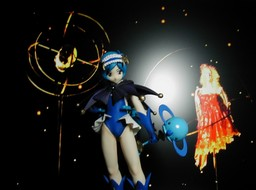

SRDX 奥さまは魔法少女 紅さやか
あおり
正面（ピンボケ） ユージン SRDX 奥さまは魔法少女 紅さやか ことクルージェです。アニメはもう一つだったのですが、安いわりに人形のデキが良かったので買ってしまいました。15 cm ぐらいの高さです。背景は Synforest社の吉田良一 CD-ROM 作品集 “ANATOMIC DOLL” (絶版?)から取っています。 更新：06/01/31 初公開：2006年01月31日 18:32:54
Links: ユージン: http://www.yujin-figure.com/ (hbm) Synforest: http://www.synforest.co.jp/ (hbm)